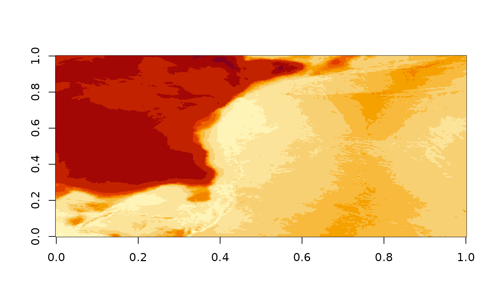

elevation.RdRead elevation data for any region on Earth.
elevation(
extent = c(-180, 180, -90, 90),
...,
dimension = NULL,
projection = NULL,
resample = "bilinear",
source = NULL,
threshold = 0.5
)a numeric vector of xmin,xmax,ymin,ymax or a terra or raster rast object
arguments passed to 'vapour::vapour_warp_raster'
optional output size in ncol,nrow (x,y)
optional coordinate reference system to use (map projection), longlat is assumed
resampling algorithm for the GDAL warper, "bilinear" by default
a GDAL raster source, to override the inbuild GEBCO + SRTM (in future we might patch in local source)
a size in degrees above which no SRTM data is queried (about )
a matrix, or depending on format of 'extent' a terra rast or raster object with elevation data
Originally using GEBCO 2019 as a background, and SRTM 30m resolution for regions that fit approximately within the size of an SRTM tile (these are 1 degree wide).
Note that data is streamed into memory, so don't make the dimensions of the 'x' target raster too big.
image(elevation())
image(elevation(c(100, 150, -60, -20)))
elevation(terra::rast())
#> class : SpatRaster
#> dimensions : 180, 360, 1 (nrow, ncol, nlyr)
#> resolution : 1, 1 (x, y)
#> extent : -180, 180, -90, 90 (xmin, xmax, ymin, ymax)
#> coord. ref. : lon/lat WGS 84
#> source : memory
#> name : lyr.1
#> min value : -7155.458
#> max value : 5314.292
elevation(raster::raster())

#> class : RasterLayer
#> dimensions : 180, 360, 64800 (nrow, ncol, ncell)
#> resolution : 1, 1 (x, y)
#> extent : -180, 180, -90, 90 (xmin, xmax, ymin, ymax)
#> crs : +proj=longlat +datum=WGS84
#> source : memory
#> names : layer
#> values : -7155.458, 5314.292 (min, max)
#>
elevation(raster::raster(raster::extent(80, 120, -60, -40), res = 0.25, crs = "OGC:CRS84"))
#> Warning: CRS is NA. Assuming it is longitude/latitude
#> class : RasterLayer
#> dimensions : 80, 160, 12800 (nrow, ncol, ncell)
#> resolution : 0.25, 0.25 (x, y)
#> extent : 80, 120, -60, -40 (xmin, xmax, ymin, ymax)
#> crs : NA
#> source : memory
#> names : layer
#> values : -5078.921, -1291.979 (min, max)
#>
elevation(raster::raster(raster::extent(c(-1, 1, -1, 1) * 25e3), nrows = 1024, ncols = 1024,
crs = "+proj=laea +lat_0=44.6371 +lon_0=-63.5923"))
#> [1] "SRTM in use, in addition to GEBCO"
#> class : RasterLayer
#> dimensions : 1024, 1024, 1048576 (nrow, ncol, ncell)
#> resolution : 48.82812, 48.82812 (x, y)
#> extent : -25000, 25000, -25000, 25000 (xmin, xmax, ymin, ymax)
#> crs : +proj=laea +lat_0=44.6371 +lon_0=-63.5923
#> source : memory
#> names : layer
#> values : -3.343157, 231.3755 (min, max)
#>